git clone https://github.com/cloudadc/container-ingress.git
cd container-ingress/nginx-plus-ingress/bigip/cluster-wide/Deployment Architectures
Table of Contents
Depends on the Ingress Controller’s monitoring scope(cluster wide, single namespace base on ingress class), there are 3 types deployment architectures, BIG-IP used as external ingress controler for Nginx Plus Ingress controller.
BIG-IP with Cluster-wide Ingress Controller
Architectures
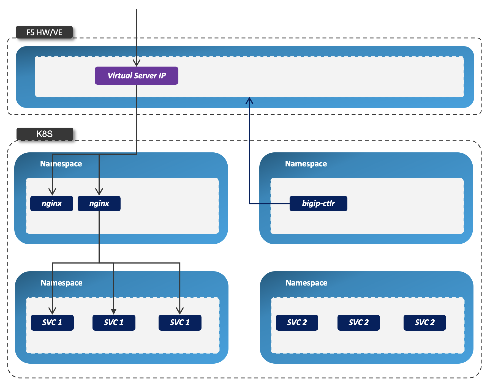
-
Nginx Controller has multiple replicas
-
Nginx Controller play as cluster-wide ingress control
-
BIGIP Virtual Server IP is the external enterence for all nginx replicas
-
bigip-ctlrdeploy BIGIP Virtual Server nginx pod as pool member
1. Get Code
2. Refer to Installation to set up Nginx Plus Ingress & Expose to F5
In this section, Cluster-wide Ingress Controller has 3 replicas, F5 load balancing these replicas.
// 1. deploy cluster wide nginx ingress controller
kubectl apply -f nginx-plus-ingress.yaml
// 2. expose to F5
kubectl apply -f nginx-plus-ingress-svc.yaml
kubectl apply -f nginx-plus-ingress-configmap.yamlExamples
1. Set up
kubectl apply -f example-deploy.yaml
kubectl apply -f example-ingress.yamlThis will create 4 namespaces, and each namespace has 2 services coffee and tea, also there are 4 ingress resources be create in 4 namespaces accordingly, each has reference a hostname, the path to different the 2 services in each namespace.
3. Check the nginx ingress controller pod log, all ingress be registered on each controller
for i in $(kubectl get pods -n nginx-ingress --no-headers | awk '{print $1}') ; do echo "$ kubectl logs $i -n nginx-ingress | grep nginxtest" ; kubectl logs $i -n nginx-ingress | grep nginxtest ; echo ; donethe above commands output likes:
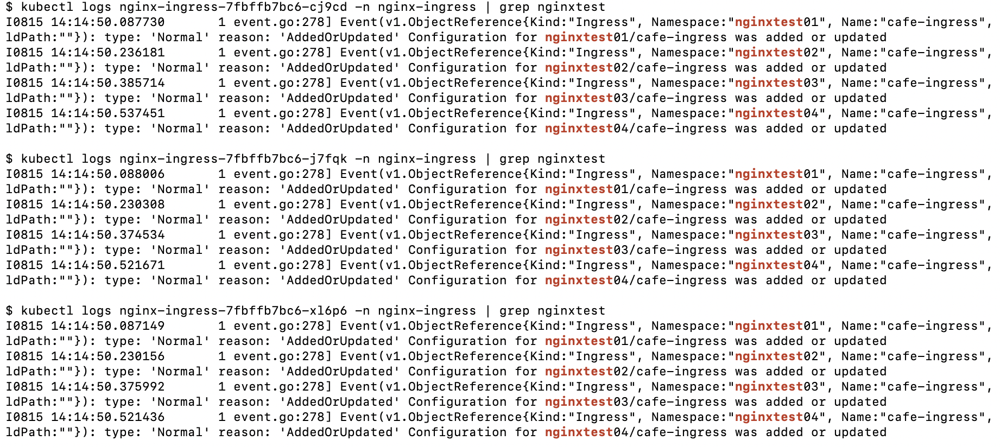
this hints all 4 ingress resources be deployed to all 3 ingress controller pod.
4. Test
for i in 1 2 3 4 ; do curl http://nginxtest0$i.example.com/coffee ; echo ; done
for i in 1 2 3 4 ; do curl http://nginxtest0$i.example.com/tea ; echo ; donethe response of coffee service looks like
Server address: 10.244.1.223:8080
Server name: coffee-688fbd68f8-qxzv8
Date: 15/Aug/2020:14:22:16 +0000
URI: /coffee
Request ID: 506d7afa8eebbd99c26477d241139333and the response of tea service looks
Server address: 10.244.1.218:8080
Server name: tea-67c78c85b8-x4tkv
Date: 15/Aug/2020:14:22:26 +0000
URI: /tea
Request ID: afbfa92684bc5e15c7ad588c772057365. Check nginx access log
for i in $(kubectl get pods -n nginx-ingress --no-headers | awk '{print $1}') ; do echo "$ kubectl logs $i -n nginx-ingress | grep coffee" ; kubectl logs $i -n nginx-ingress | grep coffee ; echo ; done
$ kubectl logs nginx-ingress-658848c866-q9hmb -n nginx-plus-ingress | grep coffee
10.1.10.61 - - [12/Jul/2020:10:15:50 +0000] "GET /coffee HTTP/1.1" 200 161 "-" "curl/7.29.0" "-"
$ kubectl logs nginx-ingress-658848c866-wgq7b -n nginx-plus-ingress | grep coffee
10.1.10.61 - - [12/Jul/2020:10:15:50 +0000] "GET /coffee HTTP/1.1" 200 162 "-" "curl/7.29.0" "-"
$ kubectl logs nginx-ingress-658848c866-z9tcd -n nginx-plus-ingress | grep coffee
10.1.10.61 - - [12/Jul/2020:10:15:50 +0000] "GET /coffee HTTP/1.1" 200 162 "-" "curl/7.29.0" "-"
10.1.10.61 - - [12/Jul/2020:10:15:50 +0000] "GET /coffee HTTP/1.1" 200 162 "-" "curl/7.29.0" "-"
for i in $(kubectl get pods -n nginx-ingress --no-headers | awk '{print $1}') ; do echo "$ kubectl logs $i -n nginx-ingress | grep tea" ; kubectl logs $i -n nginx-ingress | grep tea ; echo ; done
$ kubectl logs nginx-ingress-658848c866-q9hmb -n nginx-plus-ingress | grep tea
10.1.10.61 - - [12/Jul/2020:10:16:37 +0000] "GET /tea HTTP/1.1" 200 155 "-" "curl/7.29.0" "-"
$ kubectl logs nginx-ingress-658848c866-wgq7b -n nginx-plus-ingress | grep tea
10.1.10.61 - - [12/Jul/2020:10:16:37 +0000] "GET /tea HTTP/1.1" 200 156 "-" "curl/7.29.0" "-"
$ kubectl logs nginx-ingress-658848c866-z9tcd -n nginx-plus-ingress | grep tea
10.1.10.61 - - [12/Jul/2020:10:16:36 +0000] "GET /tea HTTP/1.1" 200 156 "-" "curl/7.29.0" "-"
10.1.10.61 - - [12/Jul/2020:10:16:37 +0000] "GET /tea HTTP/1.1" 200 156 "-" "curl/7.29.0" "-"|
Note
|
The 4 continue request be 3 nginx controller with Least Connections Member algorithm.
|
6. Check config change
kubectl exec -it nginx-ingress-7fbffb7bc6-j7fqk -n nginx-ingress -- bash
$ cd /etc/nginx/conf.d/
$ ls
nginxtest01-cafe-ingress.conf nginxtest02-cafe-ingress.conf nginxtest03-cafe-ingress.conf nginxtest04-cafe-ingress.conf
$ cat nginxtest01-cafe-ingress.conf
upstream nginxtest01-cafe-ingress-nginxtest01.example.com-coffee-svc-80 {
zone nginxtest01-cafe-ingress-nginxtest01.example.com-coffee-svc-80 256k;
random two least_conn;
server 10.244.1.223:8080 max_fails=1 fail_timeout=10s max_conns=0;
server 10.244.2.217:8080 max_fails=1 fail_timeout=10s max_conns=0;
}
upstream nginxtest01-cafe-ingress-nginxtest01.example.com-tea-svc-80 {
zone nginxtest01-cafe-ingress-nginxtest01.example.com-tea-svc-80 256k;
random two least_conn;
server 10.244.1.215:8080 max_fails=1 fail_timeout=10s max_conns=0;
server 10.244.1.218:8080 max_fails=1 fail_timeout=10s max_conns=0;
server 10.244.2.211:8080 max_fails=1 fail_timeout=10s max_conns=0;
}
server {
listen 80;
server_tokens "on";
server_name nginxtest01.example.com;
status_zone nginxtest01.example.com;
location /tea {
proxy_http_version 1.1;
proxy_connect_timeout 60s;
proxy_read_timeout 60s;
proxy_send_timeout 60s;
client_max_body_size 1m;
proxy_set_header Host $host;
proxy_set_header X-Real-IP $remote_addr;
proxy_set_header X-Forwarded-For $proxy_add_x_forwarded_for;
proxy_set_header X-Forwarded-Host $host;
proxy_set_header X-Forwarded-Port $server_port;
proxy_set_header X-Forwarded-Proto $scheme;
proxy_buffering on;
proxy_pass http://nginxtest01-cafe-ingress-nginxtest01.example.com-tea-svc-80;
}
location /coffee {
proxy_http_version 1.1;
proxy_connect_timeout 60s;
proxy_read_timeout 60s;
proxy_send_timeout 60s;
client_max_body_size 1m;
proxy_set_header Host $host;
proxy_set_header X-Real-IP $remote_addr;
proxy_set_header X-Forwarded-For $proxy_add_x_forwarded_for;
proxy_set_header X-Forwarded-Host $host;
proxy_set_header X-Forwarded-Port $server_port;
proxy_set_header X-Forwarded-Proto $scheme;
proxy_buffering on;
proxy_pass http://nginxtest01-cafe-ingress-nginxtest01.example.com-coffee-svc-80;
}
}7. Check dashboard and statistics
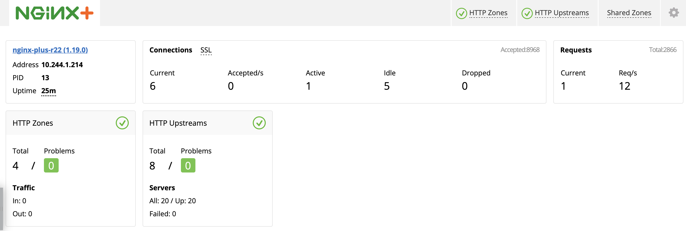
the nginx puls ingress controller’s detailed statistics in F5 looks
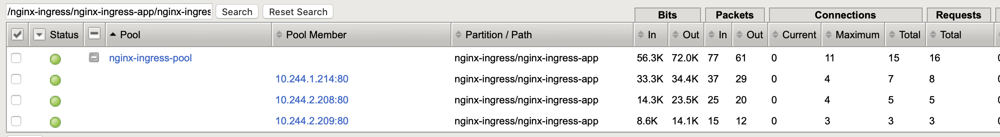
BIG-IP with Single-namespace Ingress Controller
Architectures
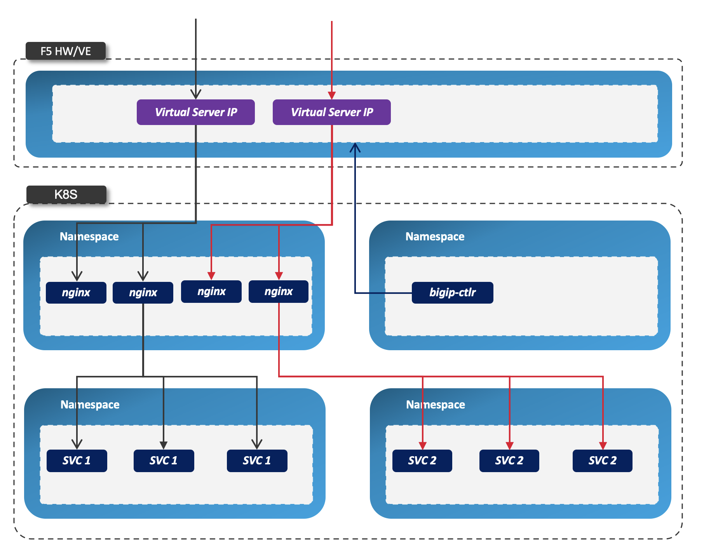
-
Each namespace has reference a nginx controller
-
Each nginx Controller has multiple replicas
-
Nginx Controller play as single-namespace ingress control
-
BIGIP Virtual Server IP is the external enterence
-
bigip-ctlrdeploy BIGIP Virtual Server nginx pod as pool member
1. Get Code
git clone https://github.com/cloudadc/container-ingress.git
cd container-ingress/nginx-plus-ingress/bigip/single-namespace/2. Refer to Installation to set up Nginx Plus Ingress & Expose to F5
In this section, we will deploy 2 groups of ingress controller, each group has 2 controller pods, each group take charge of a single namespace. F5 load balancing each group and provide a unified enterence.
// 1. deploy single namespace nginx ingress controller
kubectl apply -f nginx-plus-ingress-test01.yaml
kubectl apply -f nginx-plus-ingress-test02.yaml
// 2. deploy bigip controller
kubectl apply -f nginx-plus-ingress-svc.yaml
kubectl apply -f nginx-plus-ingress-configmap.yamlthe above setting up will create 2 ingress controller, one for namespace test01, and the other for test02.
The reference yaml files:
Examples
1. Set up
kubectl apply -f example-deploy.yaml
kubectl apply -f example-ingress.yaml2. Check Ingress controller log
for i in $(kubectl get pods -n nginx-ingress --no-headers | awk '{print $1}') ; do echo "$ kubectl logs $i -n nginx-ingress | grep test01" ; kubectl logs $i -n nginx-ingress | grep test01 ; echo ; done
for i in $(kubectl get pods -n nginx-ingress --no-headers | awk '{print $1}') ; do echo "$ kubectl logs $i -n nginx-ingress | grep test02" ; kubectl logs $i -n nginx-ingress | grep test02 ; echo ; donethe test01 be handled by nginx-plus-ingress-test01:
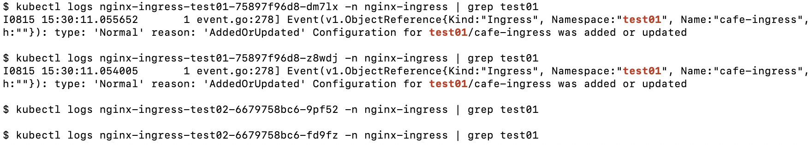
the test02 be handled by nginx-plus-ingress-test02:
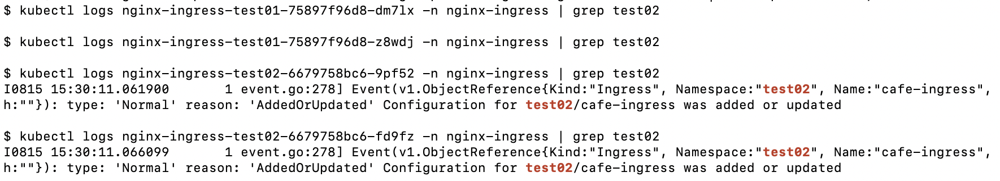
3. Test
curl http://nginxtest01.example.com/coffee
curl http://nginxtest01.example.com/tea
curl http://nginxtest02.example.com/coffee
curl http://nginxtest02.example.com/tea4. Check dashboard and statistics
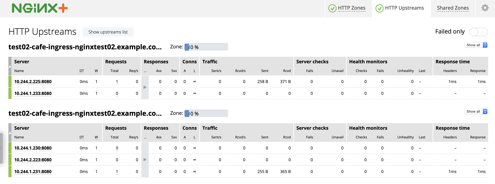
BIG-IP with Ingress Controller for Specific Ingress Class
Architectures
-
Multiple nginx controller work parallel
-
Each nginx Controller has multiple replicas
-
Nginx Controller for specific ingress class
-
BIGIP Virtual Server IP is the external enterence
-
bigip-ctlrdeploy BIGIP Virtual Server nginx pod as pool member
1. Get Code
git clone https://github.com/cloudadc/container-ingress.git
cd container-ingress/nginx-plus-ingress/bigip/specific-ingress-class/2. Refer to Installation to set up Nginx Plus Ingress & Expose to F5
// 1. deploy Ingress Controller for Specific Ingress Class
kubectl apply -f nginx-plus-ingress.yaml
kubectl apply -f nginx-plus-ingress-fintech.yaml
// 2. deploy bigip controller
kubectl apply -f nginx-plus-ingress-svc.yaml
kubectl apply -f nginx-plus-ingress-configmap.yamlthe above setting up deployed 2 ingress controller, one for monitoring the ingress resources with kubernetes.io/ingress.class: fintech, the other for monitoring ingress resource with default ingress class.
The reference yaml files:
Examples
1. Set up
kubectl apply -f example-deploy.yaml
kubectl apply -f example-ingress.yaml
kubectl apply -f example-ingress-fintech.yamlthis will create 4 namespaces, each namespace has 2 services named coffee and tea, each namespace also has reference a ingress resources, the 1st 2 ingress resources use the default ingress class, the 2nd 2 ingress resource in fintech as ingress class.
2. Check Ingress controller log
for i in $(kubectl get pods -n nginx-ingress --no-headers | awk '{print $1}') ; do echo "$ kubectl logs $i -n nginx-ingress | grep nginxtest" ; kubectl logs $i -n nginx-ingress | grep nginxtest ; echo ; done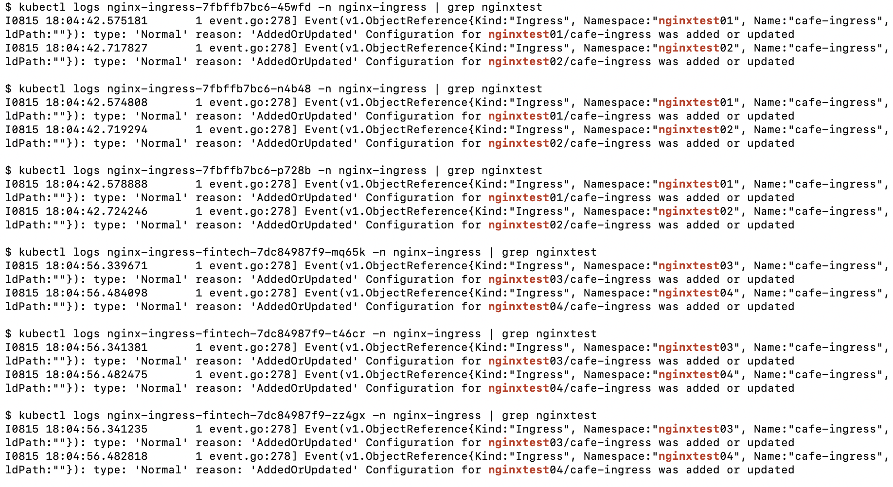
note that the nginxtest01 and nginxtest02 are managed by nginx-ingress, the nginxtest04 and nginxtest04 are managed by nginx-ingress-fintech.
3. Test
for i in {1..10} ; do curl http://nginxtest01.example.com/coffee ; curl http://nginxtest01.example.com/tea ; curl http://nginxtest02.example.com/coffee ; curl http://nginxtest02.example.com/tea ; done
for i in {1..10} ; do curl http://nginxtest03.example.com/coffee ; curl http://nginxtest03.example.com/tea ; curl http://nginxtest04.example.com/coffee ; curl http://nginxtest04.example.com/tea ; done4. Check dashboard and statistics
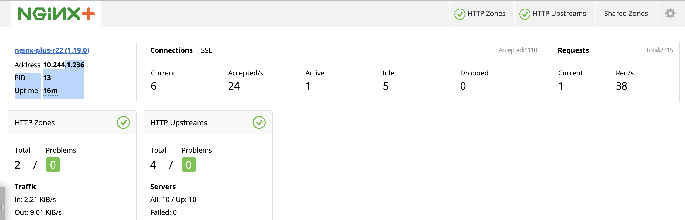
Check the ingress statistics of fintech related requests:
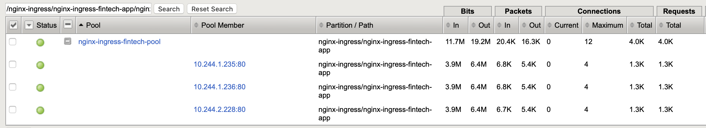